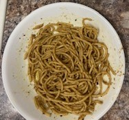

Herbed Spaghetti

Ingredients:
1/2 box of Linguini Pasta
2 tbsp garlic, minced
1 tsp salt (or to taste)
1 tbsp oil
1 tbsp butter
1 tbsp oregano
1/2 tbsp chilly flakes
Process:
- Heat a large skillet over medium high heat and add butter and oil.
- Add salt, oregano, chilly flakes & garlic and continue to stir until the garlic is fragrant.
- Add in the cooked linguini and continue to cook until the dressing mixes up with the linguini.
- Turn off heat, squeeze fresh lemon over the pasta- and garnish with chopped fresh parsley (optional).